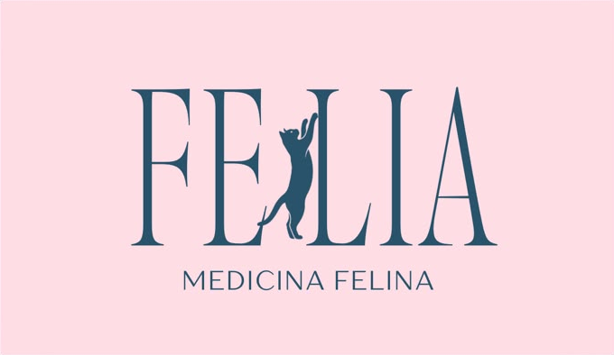

Diga adeus ao trauma da caixinha de transporte e das clínicas agitadas. Cuidados veterinários especializados e cat sitting com formação clínica, no ambiente onde seu gato se sente seguro.

Sem estresse para o paciente
Cuidados com olhar técnico e amor
Selecione seu bairro em Guarulhos para verificar rota:
Gatos são animais territorialistas e muito sensíveis a mudanças. Veja como o atendimento domiciliar protege o bem-estar do seu felino:
Sem luta para colocar o gato na caixa, sem miados de pânico no carro e sem trânsito estressante.
Ambiente 100% livre do medo de outros animais latindo ou odores que disparam o cortisol felino.
Pressão arterial, glicose e frequência cardíaca sem a alteração drástica do pico de adrenalina de viagens.
Atenção exclusiva para observar o comportamento, caixa de areia, alimentação e rotina com calma.
A união perfeita entre conhecimento médico veterinário especializado e assistência prática dedicada.
Médica Veterinária Especializada em Felinos
Dedicada exclusivamente à medicina felina, aplica o manejo Cat Friendly com foco no diagnóstico precoce, bem-estar comportamental e tratamentos humanizados sem contenções forçadas.
Cat Sitter & Auxiliar Veterinária
Com formação em auxílio veterinário e ampla experiência prática, cuida do seu gato em suas viagens com o diferencial de saber identificar sinais clínicos precoces e aplicar medicações com total segurança.
Se o seu gatinho precisar de medicação enquanto você viaja, você não depende de um cuidador leigo. Tem à disposição uma auxiliar técnica que conta com o respaldo direto da médica veterinária especializada!
Toque nas categorias abaixo para filtrar os serviços de acordo com sua necessidade:
Avaliação física minuciosa em domicílio: ausculta, palpação, mucosas, hidratação e orientações preventivas com a médica veterinária.
Dra. Gabriella PaivaVisitas de 45 a 60 min enquanto você viaja: caixinha limpa, água fresca, carinho, brincadeiras e fotos/vídeos a cada visita!
Giovana MadureiraVacinas éticas importadas (V3, V4, V5 e Antirrábica) com protocolos individualizados e técnica que não assusta o bichano.
Proteção & ImunizaçãoAcompanhamento próximo para gatos com Doença Renal Crônica (DRC), diabetes, hipertensão e portadores de FIV e FeLV.
Cuidado ContínuoColeta de sangue, urina, fezes e citologia sem o estresse do ambiente clínico e com envio para laboratórios de referência.
Agilidade & ConfortoAplicação de remédios orais, colírios, injeções subcutâneas e fluidoterapia domiciliar sem traumas para tutor e paciente.
Manejo EspecializadoRastreamento de saúde periódico para identificar alterações precoces e garantir longevidade com qualidade de vida.
LongevidadeEnriquecimento ambiental, introdução de novos gatos na casa, ajustes na caixa de areia e redução de estresse na rotina.
Educação FelinaNossa base principal de atendimento é Guarulhos e regiões estratégicas de São Paulo:
Evite o estresse de tirar seu gato de casa. Chegamos até você com todo o equipamento veterinário estéril e materiais para o bem-estar dele.
Preencha os dados em 1 minuto. Suas preferências são salvas e já geram o pré-agendamento sincronizado com o Google Calendar.
Respondemos prontamente no WhatsApp para confirmar o horário.
Horários alinhados diretamente na agenda das profissionais.
Converse diretamente pelo WhatsApp agora mesmo:
Abrir WhatsApp OficialExperiências reais de tutores de felinos em Guarulhos e São Paulo.
"Meu gato Fred tem pavor de entrar na caixinha de transporte, ele chegava a urinar de pânico no caminho da clínica. Com a Dra. Gabriella vindo em casa no Bosque Maia, foi outra vida! Ele foi atendido deitado na caminha dele, sem nenhum estresse!"
"A Giovana cuidou dos meus dois gatos enquanto viajei por 10 dias. O fato dela ser auxiliar veterinária me deu uma tranquilidade surreal. Recebia fotos, vídeos e relatório de cada visita. Quando cheguei, eles estavam super tranquilos e felizes!"
"Excelente atendimento! Fizeram a vacinação dos meus três gatinhos e a coleta de exames sem nenhum trauma. As meninas são super pontuais, atenciosas e o carinho com que tratam os felinos é evidente em cada gesto. Recomendo de olhos fechados!"
Tire suas dúvidas rápidas sobre o atendimento domiciliar e o Cat Sitting:
Agende hoje mesmo uma visita em Guarulhos ou São Paulo. Vagas semanais limitadas para garantir a dedicação máxima a cada atendimento.